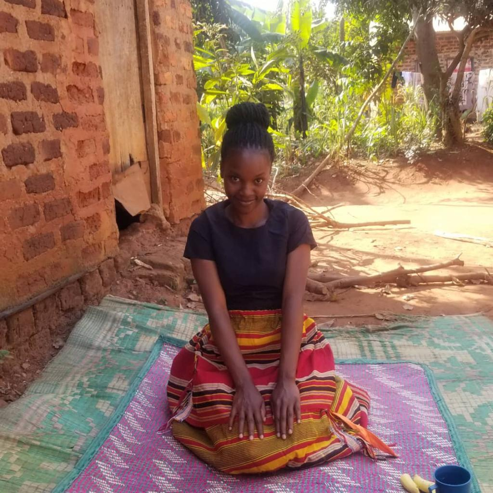

Growing Up as an African Girl Child in a Ugandan village: Innocent young, ambitious girl-child who wishes to acquire education despite the challenges presented by her community’s cultural belief and religious practices. The ambition led her treading through difficulties. Nevertheless, she acquired education to the highest level that only few within her community has. With her resilience and determination, she skillfully beat the system and its norms. Her success entailed striving to overcome at every stage working with her supportive mother. Not only did her effort involve ingenuity, creativity and determination. Her resilience was sustained throughout her childhood, adolescence and her current youthful age. Due to this determination of empowering girl-boy child, I created a YouTube channel ‘’African Muwala’’ which means African girl. I did this in a way of opening up to the world and to create awareness in an African Child. The channel’s initiative ‘’Education is the future’’ in order to help many children out there to access formal education.
I grew up watching lots of children dropping out of school both boys and girls and the main reasons were the poverty evolved around most of our village homesteads. Children fetching water each and every day from Lake Victoria which is of course a very long distance from the village, carrying heavy liters of jerry cans on their heads at a very tender age, young girls holding their sibling at their back because parents are always away to the garden and the girls are left in custody of their siblings. Fetching logs of wood from forests, these all left a boy child developing muscles at a very tender age. many children till today are going through this in my village .They are overloaded and are left with no space for enrolling for education and lack of school fees and scholastic materials leading to school dropout. Being that I have a platform, I had a golden opportunity recently to share something with the children of Namate Primary School and Bussi Primary School. I know the little I shared with them created a huge impact.